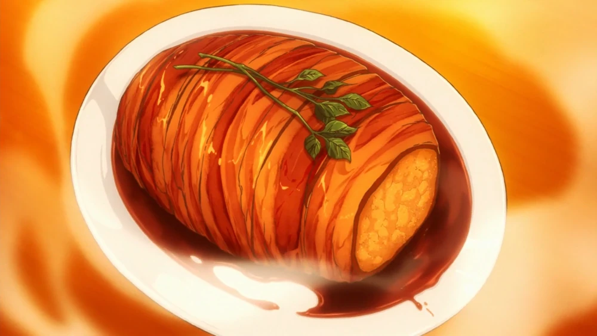

Roast Pork, Just Kidding

Description
Roast Pork, Just Kidding is a dish made by Sōma Yukihira in order to
defend Restaurant Yukihira from being demolished by Yaeko Minegasaki, the urban life planner.
Ingredients
- 6 white potatoes
- 3 Eringi mushrooms
- 1 large white onion
- 1 sprig of rosemary
- 2 tablespoons of butter
- 2 packs of thick-cut bacon
- 1 cup, or 250ml of Pinot Noir red wine
- 1/4 cup, or 60ml of sweet sake
- 1 tbsp mirin
- 2 tbsp, or 30ml of soy sauce
- 1 spring of parsley or any garnish
- 1 tsp salt
Steps
- Peel all 6 potatoes.
- Wash the potatoes then cut them into quarters or halves, depending on size.
- Chop the Mushrooms and Onions into Equally-sized Brunoise (small 5-6cm cubes).
- Steam potatoes until soft (about 15-20 minutes).
- Prep the pan with a tablespoon of butter and Pan fry onions and mushrooms until caramelized or fully golden.
- Mash into small chunks in a large bowl. Do not mash too much, you want to avoid it being frothy to form it to shape.
- Combine the onion and mushroom mix with the mashed potato.
- Pick the rosemary off its stem. Set aside.
- Add a few sprinkles of salkt to the top of the bowl.
- Let the mix cool until touchable. Take all of the mix and form it into a log shape.
- Wrap the roast in bacon, try not to leave any gaps.
- Tie the roast with twine. Intertwine the rosemary afterward.
- Bake at 190 degrees celsius for 30-45 minutes.
- Boil the wine on medium-high het in a frying pan. The aim is to reduce it.
- Add the butter, sake, and soy sauce to the wine.
- When the baking is done, remove the twine and the rosemary.
- Pour sauce on the roast slowly.
- Add parsley or watercress on top of the dish.
- Serve.